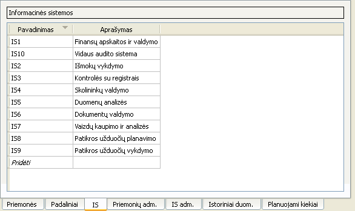

Informacinių sistemų sąsaja

Naudojantis šia sąsaja galima:
- Pridėti naują informacinę sistemą paspaudus apatinę lentelės eilutę „Pridėti“ bei suvedus reikiamus duomenis
- Ištrinti vieną ar kelias informacines sistemas jas pažymėjus, atidarius kontekstinį meniu ir paspaudus mygtuką „Pašalinti“
- Ištrinti vieną ar kelias informacines sistemas jas pažymėjus ir paspaudus Ctrl+-
- Pakeisti informacinės sistemos informaciją, du kart spragtelėjus ant lauko, kurį norima pakeisti